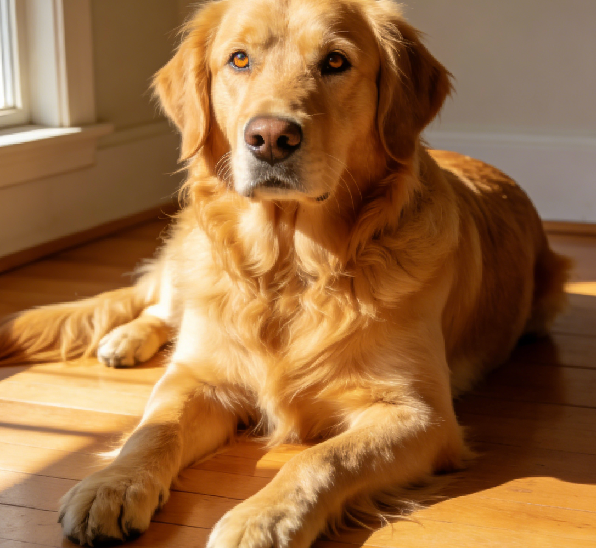
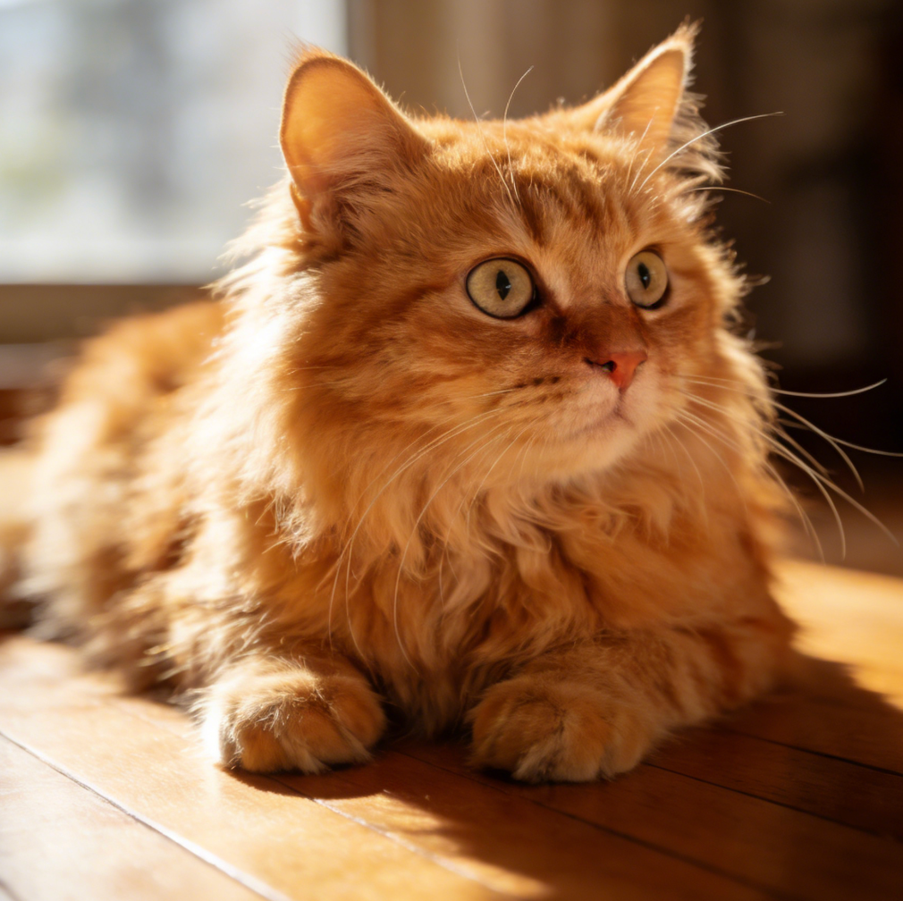
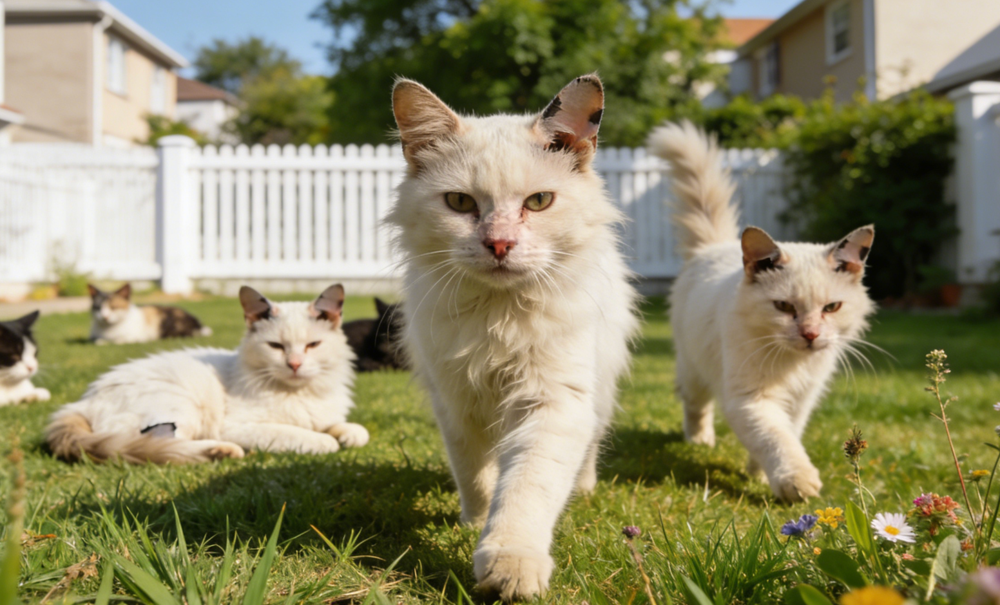

Every statistic has a heartbeat. These are the journeys from the shadows into the light.

Luna was found trapped in a frozen drainage pipe during the 2025 February freeze. Her body temperature was dangerously low, and she had lost the will to cry.
The Turning Point: After 48 hours of intensive thermal therapy and bottle feeding, she let out her first purr. It was the sound of a life deciding to stay.
"She didn't just survive; she taught our entire shelter about resilience." — Volunteer Sarah

Oliver spent 2,900 days in a cage. As a senior dog with cataracts, most families walked past him. They saw his age; they didn't see his soul.
The Turning Point: A retired librarian looking for a "quiet friend" looked into Oliver's eyes. Today, Oliver spends his afternoons napping on a velvet rug, proving that dignity has no expiration date.
Successful Adoptions
Meals Provided Yearly
Volunteer Driven

A group of 20 feral cats lived under the North Bridge, causing friction with the local neighborhood. Instead of removal, we implemented TNR (Trap-Neuter-Return).
The Result: The colony is now healthy, stable, and managed by local residents who once feared them. This is the power of co-existence through science.